About This Book
This open-access book provides a comprehensive, practical introduction to Model Predictive Control (MPC). Starting from the mathematical foundations of optimisation, state-space modelling, and classical optimal control, it builds towards the formulation, analysis, and implementation of constrained MPC for linear, robust, nonlinear, and learning-based systems.
Every chapter includes worked examples, MATLAB code, and exercises. The book is suitable as a companion to a taught graduate course or as a self-contained resource for independent study.
Key features:
- Complete MATLAB/YALMIP implementations for every MPC formulation
- Extensive TikZ figures and geometric illustrations
- Starred sections covering advanced topics (stability proofs, tube MPC, NMPC, learning-based MPC)
- Supplementary appendices on linear algebra and probability theory
- CasADi-based nonlinear MPC with rocket landing and pendulum swing-up examples
Table of Contents
Core Chapters
- Ch 1 Introduction to MPC
- Ch 2 Optimisation: The Engine of MPC
- Ch 3 State-Space Models and Discretisation
- Ch 4 Controllability and Observability
- Ch 5 Linear Quadratic Regulator (LQR)
- Ch 6 The Kalman Filter
- Ch 7 Linear Model Predictive Control
- Ch 8 Output-Feedback and Offset-Free MPC
Supplementary Chapters (*)
- Ch 9 MPC Implementation in Simulink (*)
- Ch 10 Robust and Tube MPC (*)
- Ch 11 Nonlinear Model Predictive Control (*)
- Ch 12 MPC with Learning (*)
- Ch 13 Conclusion and Further Topics (*)
Appendices
- A Linear Algebra Review
- B Probability and Random Variables
Selected Figures
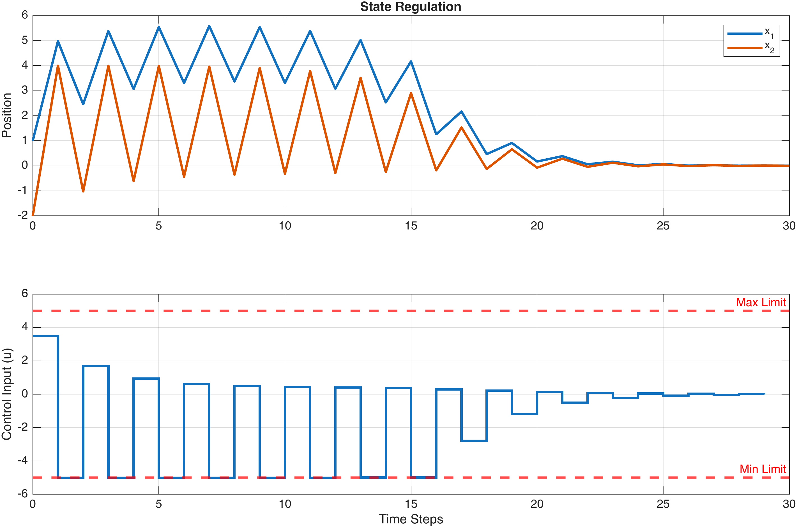
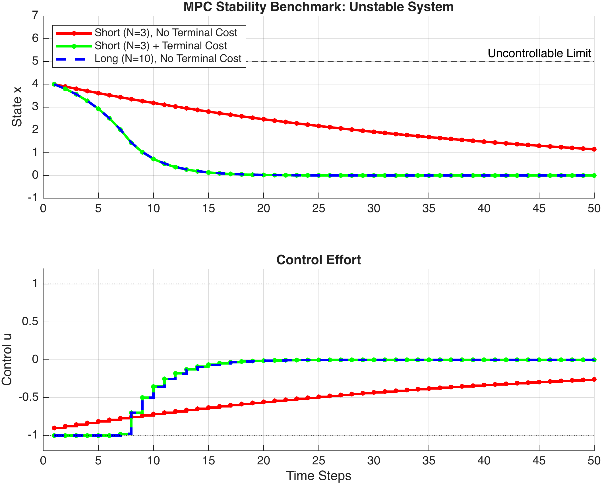
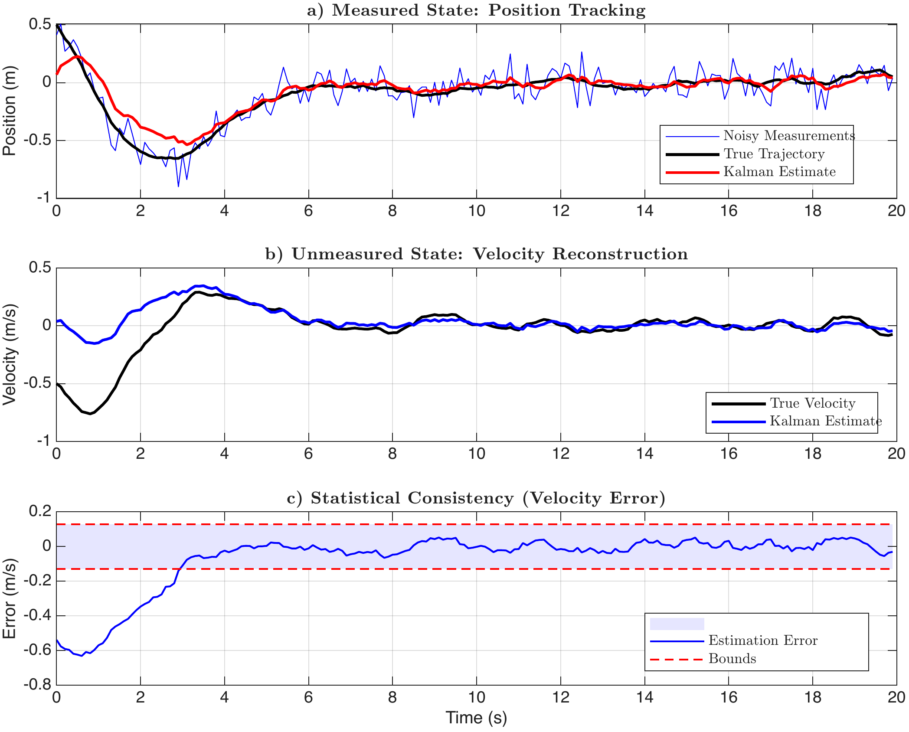

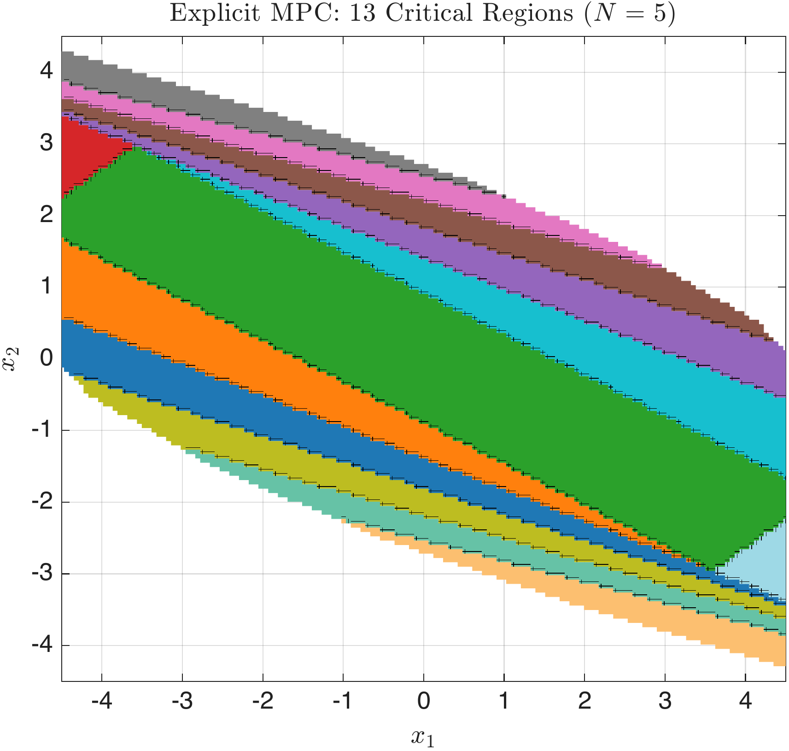
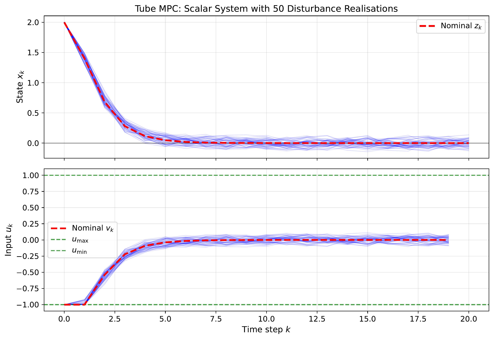
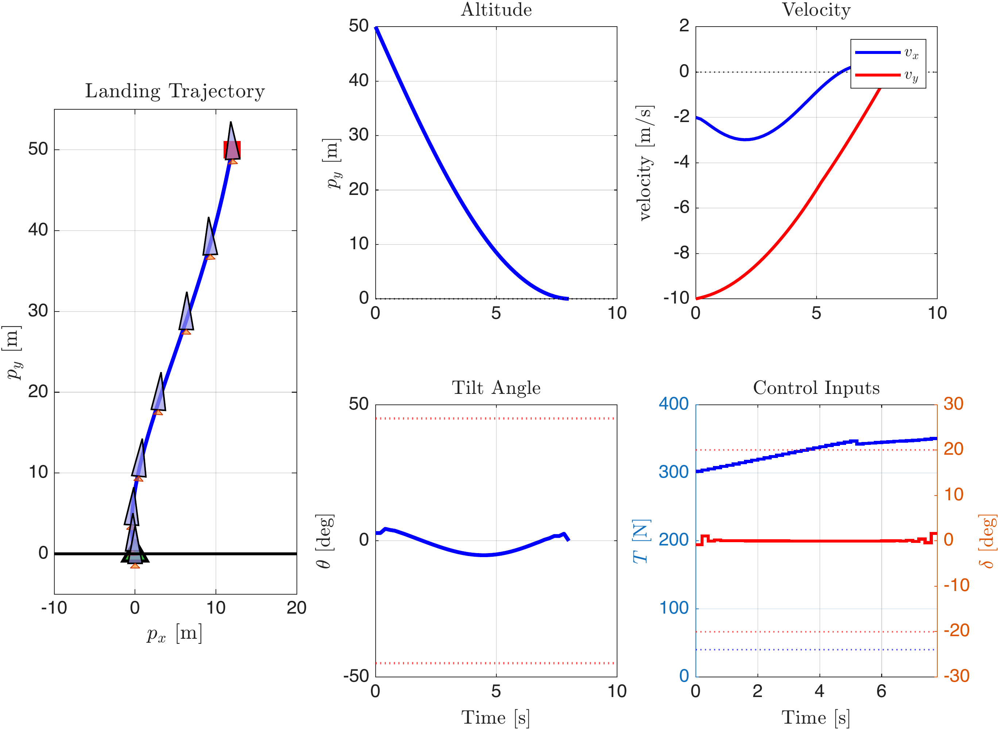

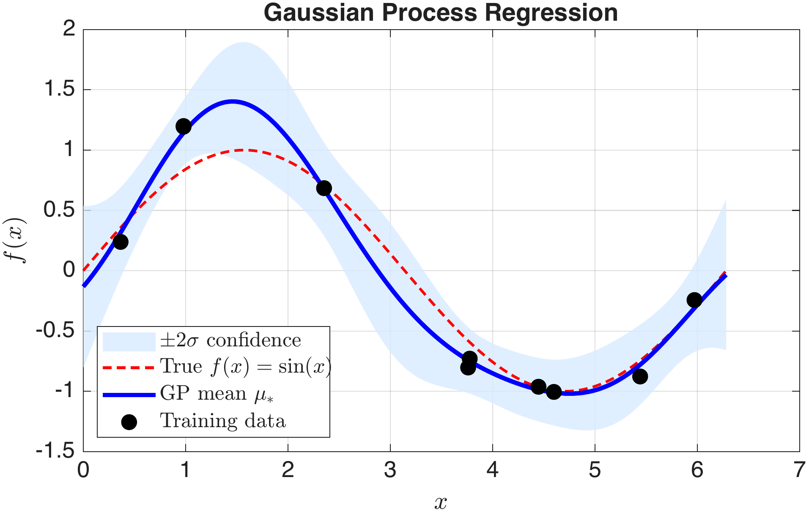

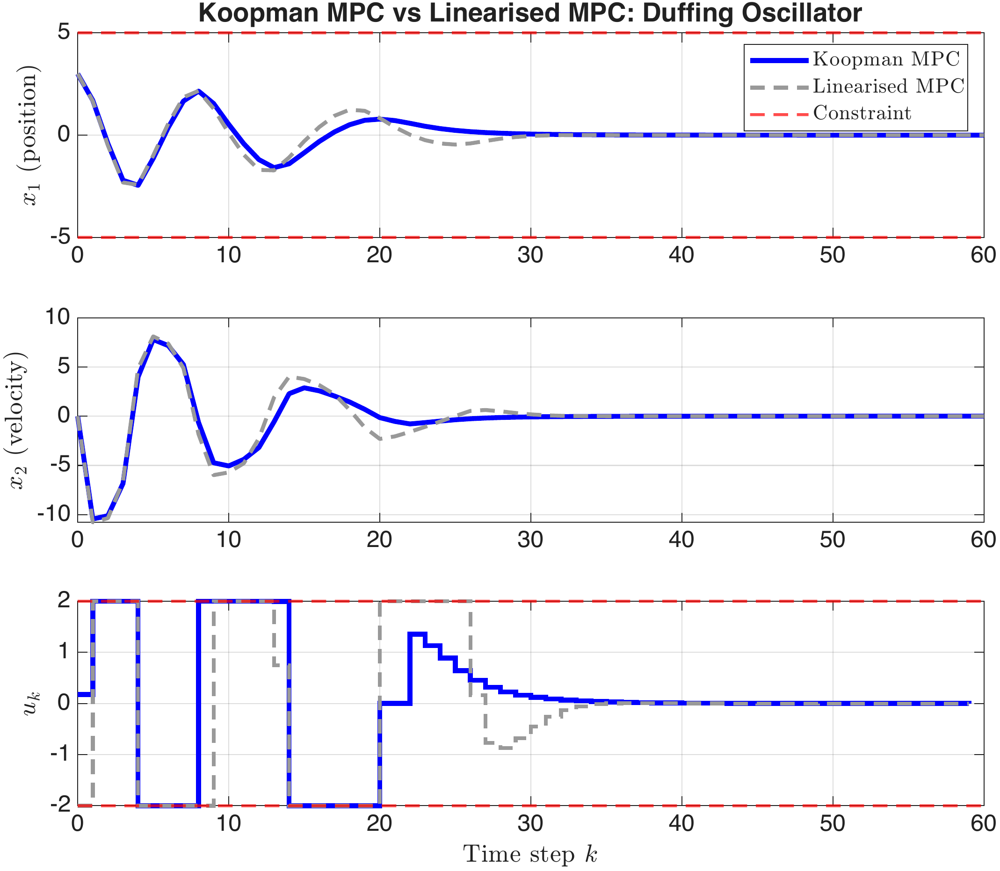
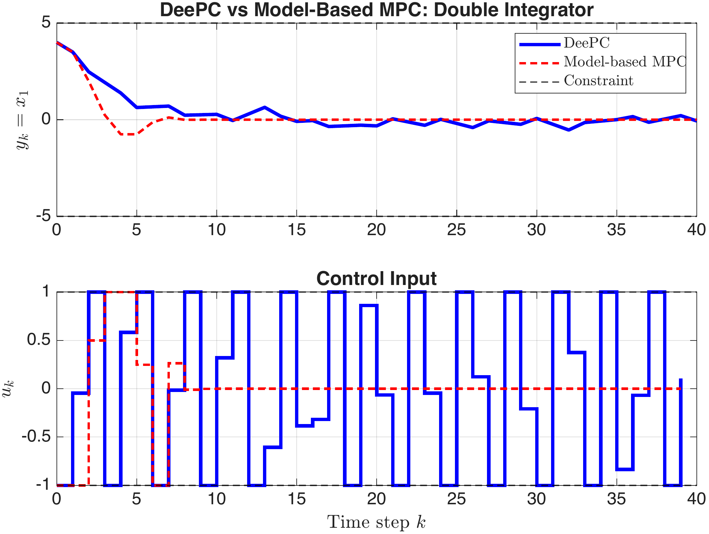
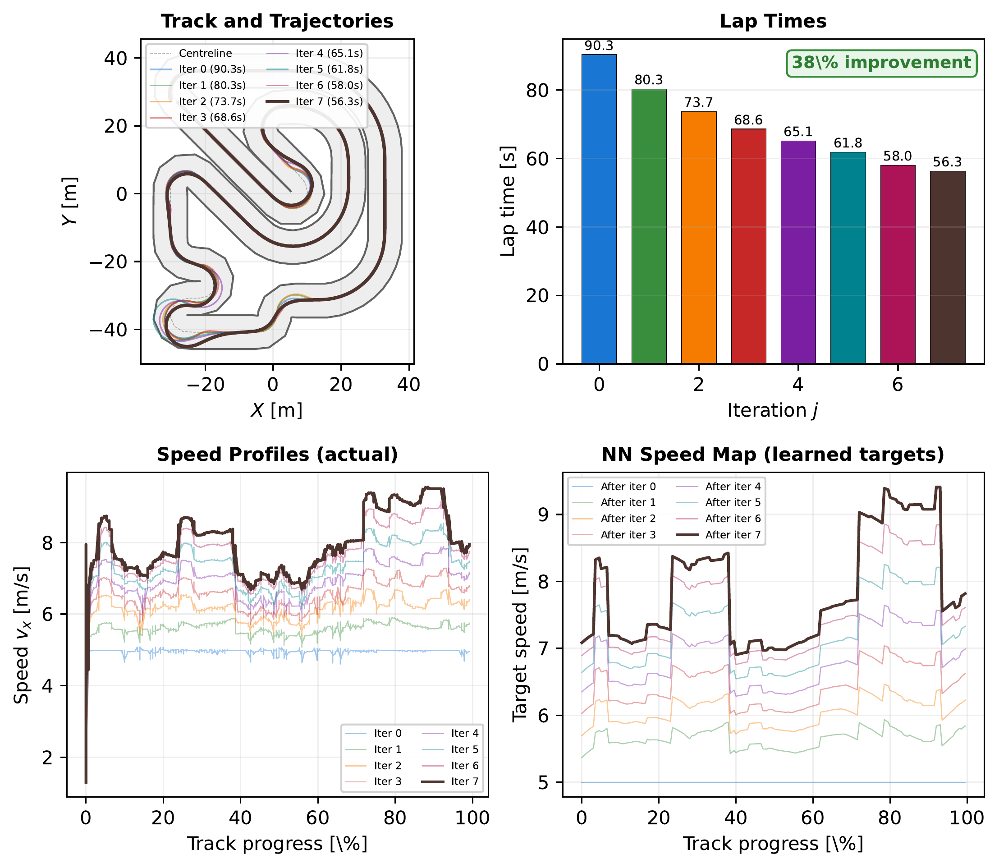
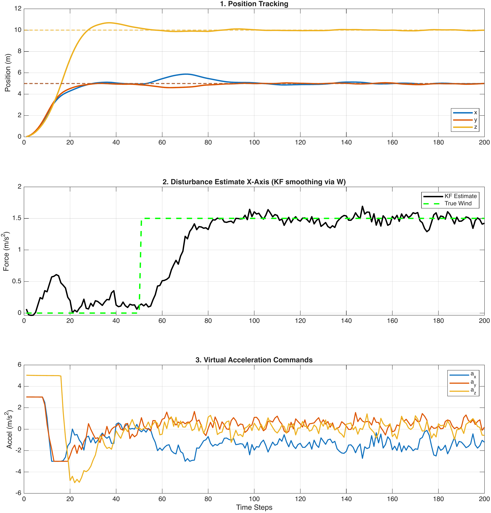
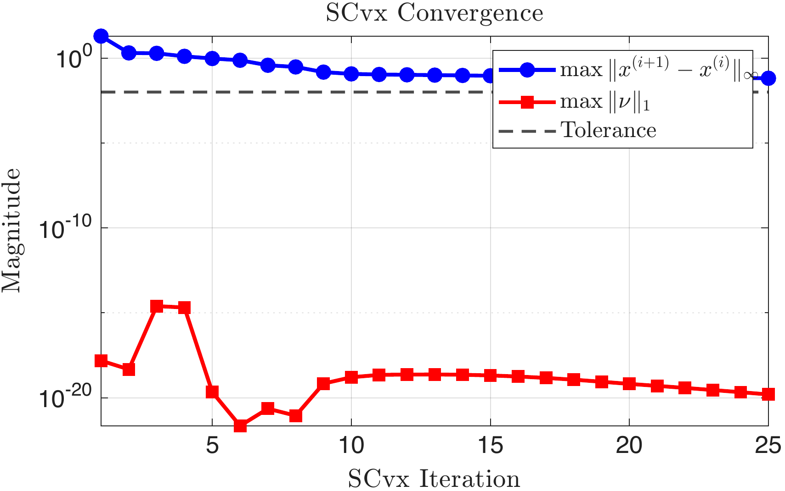